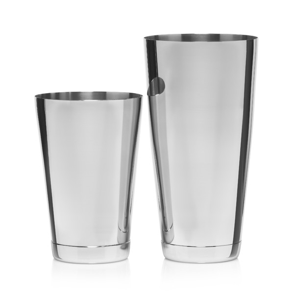
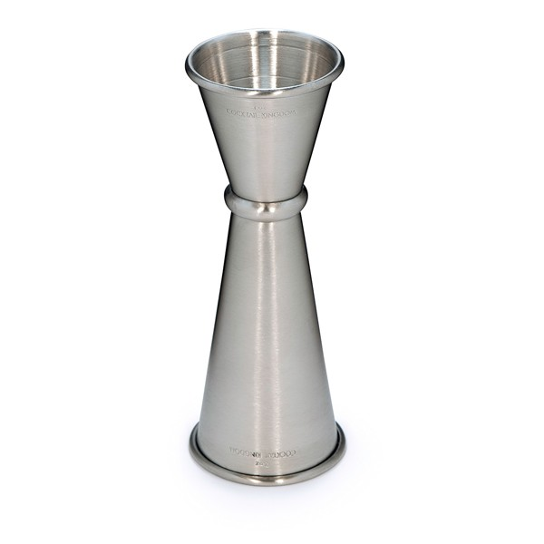
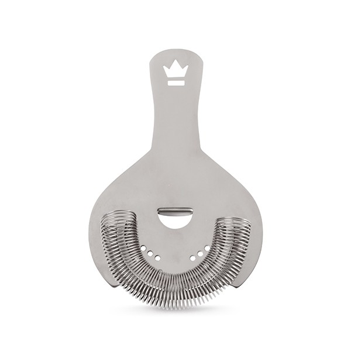
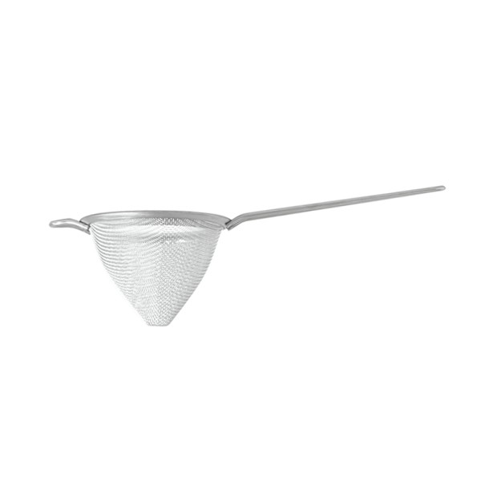
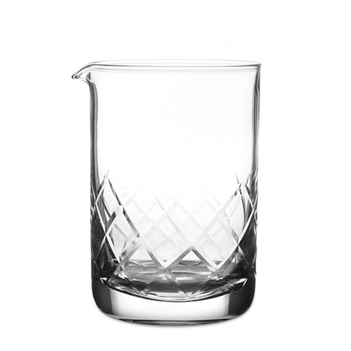
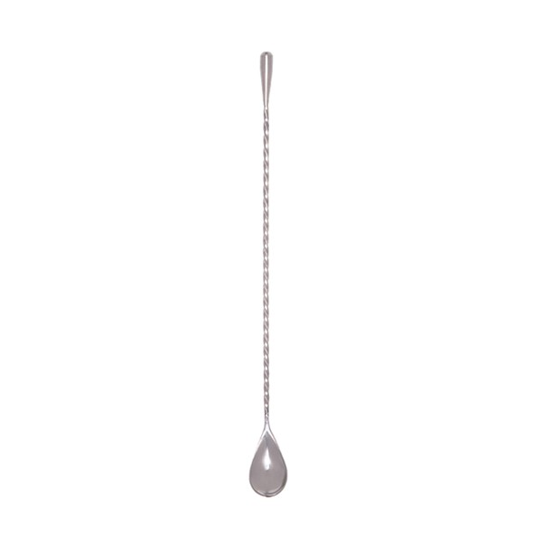
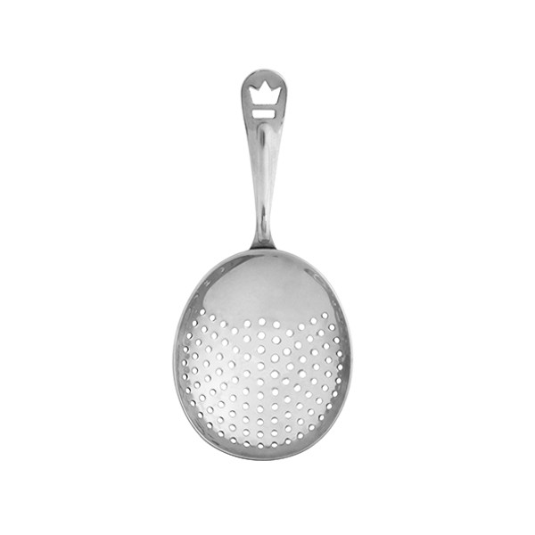

Here's a list of the essential tools you can use to make perfect cocktails at home.
-

Hover image for more info
Shaker Tins
The first step in enriching your cocktail mastery, is picking up a set of Shaker Tins.
A small tin a.k.a. "Cheater Tin" (because customers can't see what's going in) and a large tin a.k.a. "Large Tin".
While it's perfectly ok to shake with a large tin and a pint glass, I highly recommend using a cheater.
Better seal, colder, easier size to secure(we've all unloaded a tin full of cocktail on a fancy dress), and no worrying about glass breaking!
I advocate spending a few more bucks on a decent set that will last a lifetime.
-

Hover image for more info
Jiggers
These are used to get precise liquid measurement.
When I first "had" to use them, I hated the idea because I had perfected my pour count.But as time went on, I learned that I can't live without them!
I commend folks that can rely on a 'pour-count', especially doing high-volume. But I learned I could free up brain-space and handle more orders with better accuracy using jiggers
The better they are, the more accurately they measure.
They come in every conceivable measurement combo, but for our recipes I recommend a 2:1 (one side has 2 ounces and the other 1 ounce) and a 1.5:3/4 (one side has 1.5 ounces and the other has 3/4 ounce).
-

Hover image for more info
Hawthorne Strainer
Next is a hawthorne strainer
Use this guy to strain the perfectly mixed and chilled beverage you just shook into your drinking vessel.
They come in many shapes and sizes [and prices] but again, don't go cheap.
The spring will come off of the cheaper ones and putting that guy back on, especially during a busy service, is a nightmare. Think threading a slinky through your belt loops with slippery hands...
For a few dollars more you get a nice heavy one that locks in nicely
-

Hover image for more info
Here's a perfect entry level strainer:
Cocktail StrainerThis is a bit pricier, but more profesh:
Ultra Premium Cone Strainer - Gunmetal BlackFine Strainer
Here's a perfect entry level strainer:
Cocktail StrainerThis is a bit pricier, but more profesh:
Ultra Premium Cone Strainer - Gunmetal BlackNext you'll need a Fine Strainer
This is used to filter the cocktail from the Shaker Tins, through the Hawthorne Strainer, before it goes into the cocktail glass
You do this for a few reasons: Removal of any pulp from juices used, Filtering the bits of ice chips that form, and really giving the cocktail an overall smooth texture.
It's the little extra steps like this that set apart a "good cocktail" from a "great cocktail". Sometimes undetectable, but it's there.
-

Hover image for more info
Mixing Glass
Now starts phase II for unbeatable cocktails.
Get yourself a good mixing glass
Mixing glasses are used for those cocktails that are "spirit forward" meaning you want to taste the main spirit, just accented by other flavors and spices.
You wouldn't throw your tea and honey in a blender just to get it mixed right? No way, it would be all frothy and aerated! Same priniple here.
A simple guideline to remember when to stir and when to shake (with some exceptions): "Stir Clear, Shake Opaque".[Almost rhymes...]
-

Hover image for more info
Barspoon
I mentioned stirring in the mixing glass info, well ya do it with this!
This is a barspoon
Great for making a cocktail, excellent for smacking a rowdy patron in the noggin.
JK.
But I said this in an interview once, regrettably...QUALITY DOES MATTER. Anytime I encounter an unweighted flat barspoon, my skin crawls. At that point, you might as well just mix it with a tablespoon!
A quality spoon will be weighted at the tip of the handle, have a more subtle and less extreme curve of the spoon, and have a nice tight spiraled or straight body.
Avoid the spoons with the red plastic tips (no offense to anyone that uses them, I'm sure you stir a stupendous cocktail)
There is a technique with getting a good stir that will help make smooth, chilled cocktails and I'm in the proccess of making an instructional video page with this, and other cocktail techniques, so keep an eye out for it!
-

Hover image for more info
Julep Strainer
Here we have: The Julep Strainer
Not everybody is keen on these, and you can get by perfectly fine just using your Hawthorne strainer, and it takes your hands a moderate adjustment in order to use these...However
I find it's worth it!
For one, it looks classier. If you're already putting forth the effort of using the proper mixing glass for the clear cocktail with the proper spoon, you might as well complete the job and strain with the right tool!
And on a more practical level, if you're using the same Hawthorne strainer you just used to strain a fruity cocktail, even if you rinsed it, you will no doubt transfer some of that flavor into the nice clean spirit-forward cocktail you've been working on.